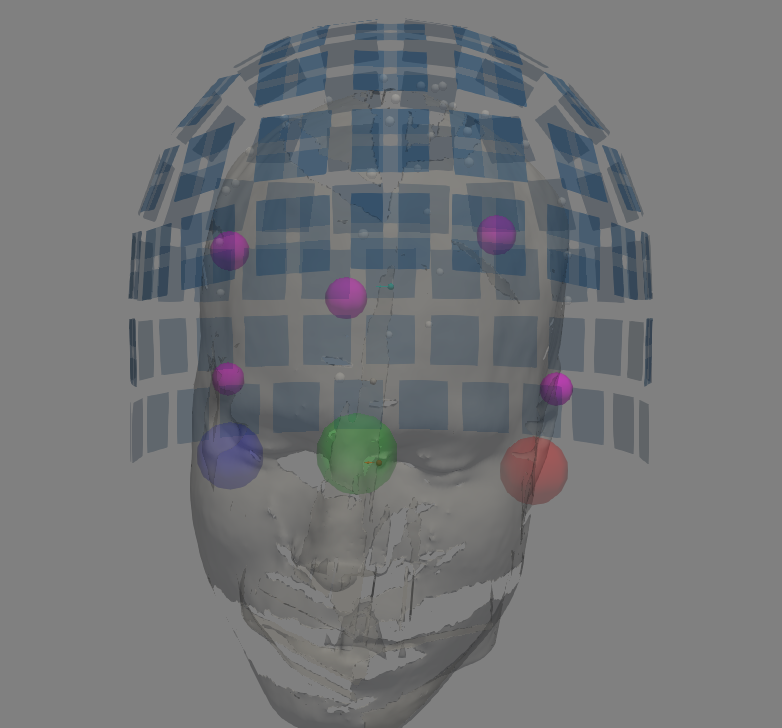
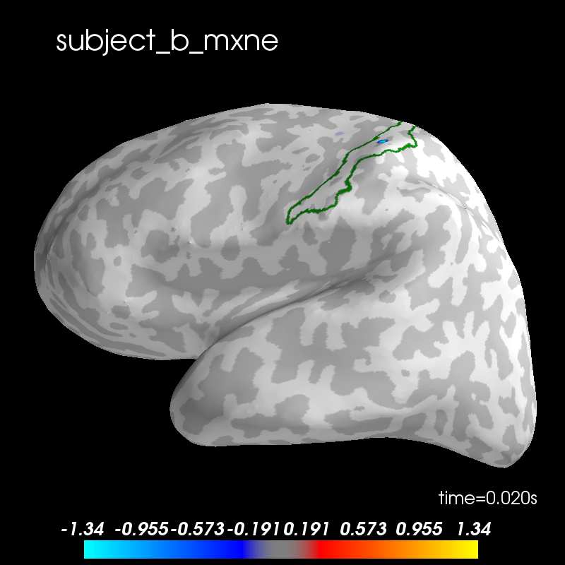
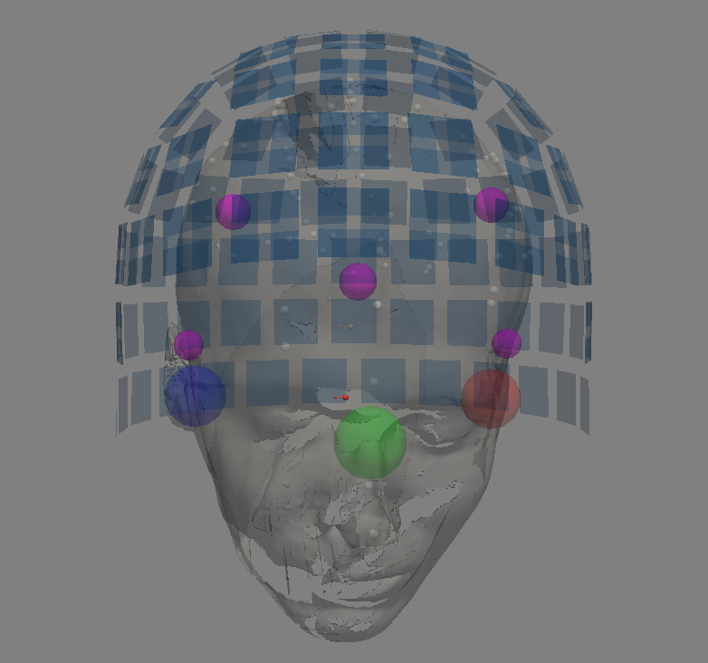
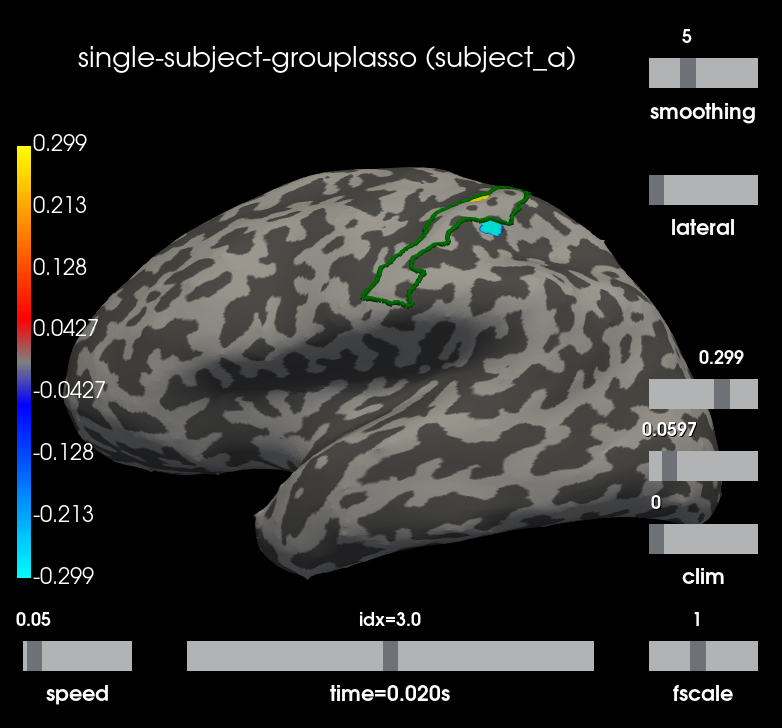
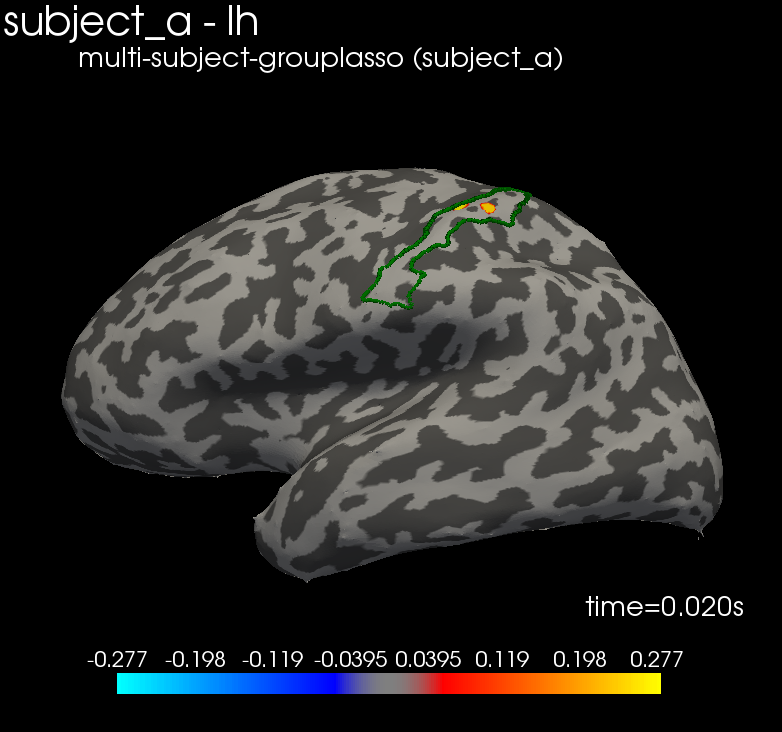
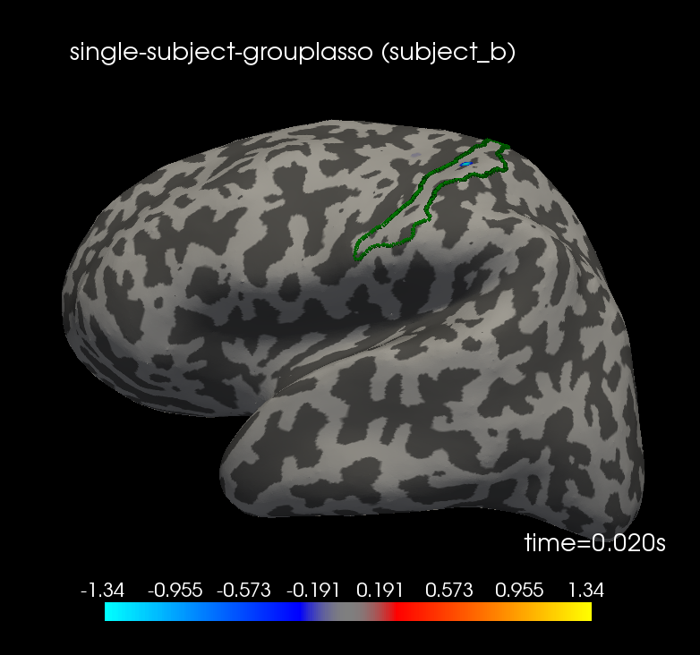
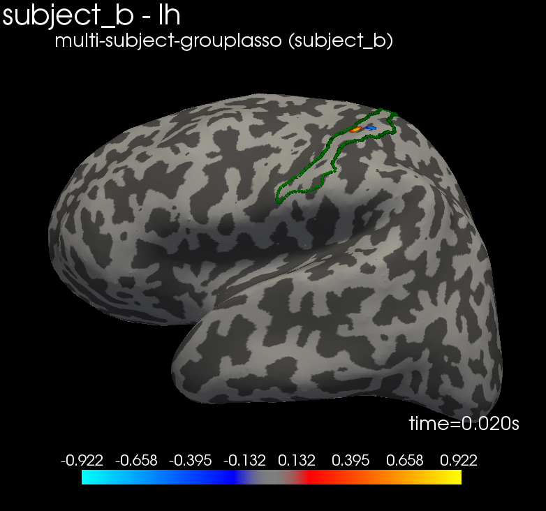

Note
Click here to download the full example code
Multi-subject joint source localization with multi-task models.¶
The aim of this tutorial is to show how to leverage functional similarity across subjects to improve source localization. For that purpose we use the the high frequency SEF MEG dataset of (Nurminen et al., 2017) which provides MEG and MRI data for two subjects.
# Author: Hicham Janati (hicham.janati@inria.fr)
#
# License: BSD (3-clause)
import mne
import os
import os.path as op
from mne.parallel import parallel_func
from mne.datasets import hf_sef
from matplotlib import pyplot as plt
from groupmne import compute_group_inverse, prepare_fwds, compute_fwd
Download and process MEG data¶
For this example, we use the HF somatosensory dataset [2]. We need the raw data to estimate the noise covariance since only average MEG data (and MRI) are provided in “evoked”. The data will be downloaded in the same location
_ = hf_sef.data_path("raw")
data_path = hf_sef.data_path("evoked")
meg_path = data_path + "/MEG/"
data_path = op.expanduser(data_path)
subjects_dir = data_path + "/subjects/"
os.environ['SUBJECTS_DIR'] = subjects_dir
raw_name_s = [meg_path + s for s in ["subject_a/sef_right_raw.fif",
"subject_b/hf_sef_15min_raw.fif"]]
def process_meg(raw_name):
"""Extract epochs from a raw fif file.
Parameters
----------
raw_name: str.
path to the raw fif file.
Returns
-------
epochs: Epochs instance
"""
raw = mne.io.read_raw_fif(raw_name)
events = mne.find_events(raw)
event_id = dict(hf=1) # event trigger and conditions
tmin = -0.05 # start of each epoch (50ms before the trigger)
tmax = 0.3 # end of each epoch (300ms after the trigger)
baseline = (None, 0) # means from the first instant to t = 0
epochs = mne.Epochs(raw, events, event_id, tmin, tmax, proj=True,
baseline=baseline)
return epochs
epochs_s = [process_meg(raw_name) for raw_name in raw_name_s]
evokeds = [ep.average() for ep in epochs_s]
# compute noise covariance (takes a few minutes)
noise_covs = []
for subj, ep in zip(["a", "b"], epochs_s):
cov_fname = meg_path + f"subject_{subj}/sef-cov.fif"
cov = mne.compute_covariance(ep[:100], tmin=None, tmax=0.)
noise_covs.append(cov)
f, axes = plt.subplots(1, 2, sharey=True)
for ax, ev, nc, ll in zip(axes.ravel(), evokeds, noise_covs, ["a", "b"]):
picks = mne.pick_types(ev.info, meg="grad")
ev.plot(picks=picks, axes=ax, noise_cov=nc, show=False)
ax.set_title("Subject %s" % ll, fontsize=15)
plt.show()
del epochs_s
Out:
Opening raw data file /home/circleci/mne_data/HF_SEF/MEG/subject_a/sef_right_raw.fif...
Read a total of 8 projection items:
generated with autossp-1.0.1 (1 x 306) idle
generated with autossp-1.0.1 (1 x 306) idle
generated with autossp-1.0.1 (1 x 306) idle
generated with autossp-1.0.1 (1 x 306) idle
generated with autossp-1.0.1 (1 x 306) idle
generated with autossp-1.0.1 (1 x 306) idle
generated with autossp-1.0.1 (1 x 306) idle
generated with autossp-1.0.1 (1 x 306) idle
Range : 26000 ... 1735999 = 8.667 ... 578.666 secs
Ready.
Opening raw data file /home/circleci/mne_data/HF_SEF/MEG/subject_a/sef_right_raw-1.fif...
Read a total of 8 projection items:
generated with autossp-1.0.1 (1 x 306) idle
generated with autossp-1.0.1 (1 x 306) idle
generated with autossp-1.0.1 (1 x 306) idle
generated with autossp-1.0.1 (1 x 306) idle
generated with autossp-1.0.1 (1 x 306) idle
generated with autossp-1.0.1 (1 x 306) idle
generated with autossp-1.0.1 (1 x 306) idle
generated with autossp-1.0.1 (1 x 306) idle
Range : 1736000 ... 2482999 = 578.667 ... 827.666 secs
Ready.
Current compensation grade : 0
2527 events found
Event IDs: [1]
2527 matching events found
Applying baseline correction (mode: mean)
Not setting metadata
Created an SSP operator (subspace dimension = 8)
8 projection items activated
Opening raw data file /home/circleci/mne_data/HF_SEF/MEG/subject_b/hf_sef_15min_raw.fif...
Read a total of 8 projection items:
generated with autossp-1.0.1 (1 x 306) idle
generated with autossp-1.0.1 (1 x 306) idle
generated with autossp-1.0.1 (1 x 306) idle
generated with autossp-1.0.1 (1 x 306) idle
generated with autossp-1.0.1 (1 x 306) idle
generated with autossp-1.0.1 (1 x 306) idle
generated with autossp-1.0.1 (1 x 306) idle
generated with autossp-1.0.1 (1 x 306) idle
Range : 169000 ... 1878999 = 56.333 ... 626.333 secs
Ready.
Opening raw data file /home/circleci/mne_data/HF_SEF/MEG/subject_b/hf_sef_15min_raw-1.fif...
Read a total of 8 projection items:
generated with autossp-1.0.1 (1 x 306) idle
generated with autossp-1.0.1 (1 x 306) idle
generated with autossp-1.0.1 (1 x 306) idle
generated with autossp-1.0.1 (1 x 306) idle
generated with autossp-1.0.1 (1 x 306) idle
generated with autossp-1.0.1 (1 x 306) idle
generated with autossp-1.0.1 (1 x 306) idle
generated with autossp-1.0.1 (1 x 306) idle
Range : 1879000 ... 2892999 = 626.333 ... 964.333 secs
Ready.
Current compensation grade : 0
2792 events found
Event IDs: [1]
2792 matching events found
Applying baseline correction (mode: mean)
Not setting metadata
Created an SSP operator (subspace dimension = 8)
8 projection items activated
Loading data for 100 events and 1051 original time points ...
0 bad epochs dropped
Computing rank from data with rank=None
Using tolerance 6.1e-09 (2.2e-16 eps * 306 dim * 8.9e+04 max singular value)
Estimated rank (mag + grad): 298
MEG: rank 298 computed from 306 data channels with 8 projectors
Created an SSP operator (subspace dimension = 8)
Setting small MEG eigenvalues to zero (without PCA)
Reducing data rank from 306 -> 298
Estimating covariance using EMPIRICAL
Done.
Number of samples used : 15100
[done]
Loading data for 100 events and 1051 original time points ...
0 bad epochs dropped
Computing rank from data with rank=None
Using tolerance 5.3e-09 (2.2e-16 eps * 306 dim * 7.8e+04 max singular value)
Estimated rank (mag + grad): 298
MEG: rank 298 computed from 306 data channels with 8 projectors
Created an SSP operator (subspace dimension = 8)
Setting small MEG eigenvalues to zero (without PCA)
Reducing data rank from 306 -> 298
Estimating covariance using EMPIRICAL
Done.
Number of samples used : 15100
[done]
Computing rank from covariance with rank=None
Using tolerance 1.9e-13 (2.2e-16 eps * 204 dim * 4.1 max singular value)
Estimated rank (grad): 201
GRAD: rank 201 computed from 204 data channels with 3 projectors
Computing rank from covariance with rank=None
Using tolerance 1.2e-14 (2.2e-16 eps * 102 dim * 0.52 max singular value)
Estimated rank (mag): 97
MAG: rank 97 computed from 102 data channels with 5 projectors
Computing rank from covariance with rank=None
Using tolerance 3.3e-13 (2.2e-16 eps * 204 dim * 7.4 max singular value)
Estimated rank (grad): 201
GRAD: rank 201 computed from 204 data channels with 3 projectors
Computing rank from covariance with rank=None
Using tolerance 8e-15 (2.2e-16 eps * 102 dim * 0.35 max singular value)
Estimated rank (mag): 97
MAG: rank 97 computed from 102 data channels with 5 projectors
/home/circleci/project/examples/plot_multitask_lasso.py:87: UserWarning: Matplotlib is currently using agg, which is a non-GUI backend, so cannot show the figure.
plt.show()
Source and forward modeling¶
To guarantee an alignment across subjects, we start by computing the source space of fsaverage
resolution = 4
spacing = "ico%d" % resolution
src_ref = mne.setup_source_space(subject="fsaverage",
spacing=spacing,
subjects_dir=subjects_dir,
add_dist=False)
Out:
Setting up the source space with the following parameters:
SUBJECTS_DIR = /home/circleci/mne_data/HF_SEF/subjects/
Subject = fsaverage
Surface = white
Icosahedron subdivision grade 4
>>> 1. Creating the source space...
Doing the icosahedral vertex picking...
Loading /home/circleci/mne_data/HF_SEF/subjects/fsaverage/surf/lh.white...
Mapping lh fsaverage -> ico (4) ...
Warning: zero size triangles: [3 4]
Triangle neighbors and vertex normals...
Loading geometry from /home/circleci/mne_data/HF_SEF/subjects/fsaverage/surf/lh.sphere...
Setting up the triangulation for the decimated surface...
loaded lh.white 2562/163842 selected to source space (ico = 4)
Loading /home/circleci/mne_data/HF_SEF/subjects/fsaverage/surf/rh.white...
Mapping rh fsaverage -> ico (4) ...
Warning: zero size triangles: [3 4]
Triangle neighbors and vertex normals...
Loading geometry from /home/circleci/mne_data/HF_SEF/subjects/fsaverage/surf/rh.sphere...
Setting up the triangulation for the decimated surface...
loaded rh.white 2562/163842 selected to source space (ico = 4)
You are now one step closer to computing the gain matrix
Compute forward models with a reference source space¶
the function compute_fwd morphs the source space src_ref to the surface of each subject by mapping the sulci and gyri patterns and computes their forward operators. Next we prepare the forward operators to be aligned across subjects
subjects = ["subject_a", "subject_b"]
trans_fname_s = [meg_path + "%s/sef-trans.fif" % s for s in subjects]
bem_fname_s = [subjects_dir + "%s/bem/%s-5120-bem-sol.fif" % (s, s)
for s in subjects]
n_jobs = 1
parallel, run_func, _ = parallel_func(compute_fwd, n_jobs=n_jobs)
fwds_ = parallel(run_func(s, src_ref, info, trans, bem, mindist=3)
for s, info, trans, bem in zip(subjects, raw_name_s,
trans_fname_s, bem_fname_s))
fwds = prepare_fwds(fwds_, src_ref, copy=False)
Out:
Processing subject subject_a
Reading destination surface /home/circleci/mne_data/HF_SEF/subjects/subject_a/surf/lh.white
Triangle neighbors and vertex normals...
Mapping lh fsaverage -> subject_a (nearest neighbor)...
[done]
Reading destination surface /home/circleci/mne_data/HF_SEF/subjects/subject_a/surf/rh.white
Triangle neighbors and vertex normals...
Mapping rh fsaverage -> subject_a (nearest neighbor)...
[done]
Loading surfaces...
Homogeneous model surface loaded.
Loading the solution matrix...
Loaded linear_collocation BEM solution from /home/circleci/mne_data/HF_SEF/subjects/subject_a/bem/subject_a-5120-bem-sol.fif
Source space : <SourceSpaces: [<surface (lh), n_vertices=178080, n_used=2562>, <surface (rh), n_vertices=163411, n_used=2562>] MRI (surface RAS) coords, subject 'subject_a'>
MRI -> head transform : /home/circleci/mne_data/HF_SEF/MEG/subject_a/sef-trans.fif
Measurement data : sef_right_raw.fif
Conductor model : instance of ConductorModel
Accurate field computations
Do computations in head coordinates
Free source orientations
Read 2 source spaces a total of 5124 active source locations
Coordinate transformation: MRI (surface RAS) -> head
0.994477 -0.033381 -0.099512 2.49 mm
0.071558 0.909221 0.410118 21.97 mm
0.076788 -0.414973 0.906588 33.87 mm
0.000000 0.000000 0.000000 1.00
Read 306 MEG channels from info
99 coil definitions read
Coordinate transformation: MEG device -> head
0.996297 -0.076615 0.039017 -1.48 mm
0.069384 0.984448 0.161392 3.66 mm
-0.050776 -0.158087 0.986119 77.69 mm
0.000000 0.000000 0.000000 1.00
MEG coil definitions created in head coordinates.
Source spaces are now in head coordinates.
Employing the head->MRI coordinate transform with the BEM model.
BEM model instance of ConductorModel is now set up
Source spaces are in head coordinates.
Checking that the sources are inside the surface and at least 3.0 mm away (will take a few...)
Skipping interior check for 873 sources that fit inside a sphere of radius 50.7 mm
Skipping solid angle check for 0 points using Qhull
Skipping interior check for 888 sources that fit inside a sphere of radius 50.7 mm
Skipping solid angle check for 0 points using Qhull
Setting up compensation data...
No compensation set. Nothing more to do.
Composing the field computation matrix...
Computing MEG at 5124 source locations (free orientations)...
Finished.
Processing subject subject_b
Reading destination surface /home/circleci/mne_data/HF_SEF/subjects/subject_b/surf/lh.white
Triangle neighbors and vertex normals...
Mapping lh fsaverage -> subject_b (nearest neighbor)...
[done]
Reading destination surface /home/circleci/mne_data/HF_SEF/subjects/subject_b/surf/rh.white
Triangle neighbors and vertex normals...
Mapping rh fsaverage -> subject_b (nearest neighbor)...
[done]
Loading surfaces...
Homogeneous model surface loaded.
Loading the solution matrix...
Loaded linear_collocation BEM solution from /home/circleci/mne_data/HF_SEF/subjects/subject_b/bem/subject_b-5120-bem-sol.fif
Source space : <SourceSpaces: [<surface (lh), n_vertices=198441, n_used=2562>, <surface (rh), n_vertices=198539, n_used=2562>] MRI (surface RAS) coords, subject 'subject_b'>
MRI -> head transform : /home/circleci/mne_data/HF_SEF/MEG/subject_b/sef-trans.fif
Measurement data : hf_sef_15min_raw.fif
Conductor model : instance of ConductorModel
Accurate field computations
Do computations in head coordinates
Free source orientations
Read 2 source spaces a total of 5124 active source locations
Coordinate transformation: MRI (surface RAS) -> head
0.997633 -0.026698 -0.063374 -0.86 mm
0.045043 0.950051 0.308828 7.15 mm
0.051963 -0.310952 0.949004 35.47 mm
0.000000 0.000000 0.000000 1.00
Read 306 MEG channels from info
99 coil definitions read
Coordinate transformation: MEG device -> head
0.994555 0.102411 0.019282 -2.88 mm
-0.100756 0.992229 -0.072998 -4.46 mm
-0.026608 0.070658 0.997145 60.28 mm
0.000000 0.000000 0.000000 1.00
MEG coil definitions created in head coordinates.
Source spaces are now in head coordinates.
Employing the head->MRI coordinate transform with the BEM model.
BEM model instance of ConductorModel is now set up
Source spaces are in head coordinates.
Checking that the sources are inside the surface and at least 3.0 mm away (will take a few...)
Skipping interior check for 746 sources that fit inside a sphere of radius 52.9 mm
Skipping solid angle check for 0 points using Qhull
Skipping interior check for 752 sources that fit inside a sphere of radius 52.9 mm
Skipping solid angle check for 0 points using Qhull
Setting up compensation data...
No compensation set. Nothing more to do.
Composing the field computation matrix...
Computing MEG at 5124 source locations (free orientations)...
Finished.
Mapping lh fsaverage -> subject_a (nearest neighbor)...
Mapping rh fsaverage -> subject_a (nearest neighbor)...
Mapping lh fsaverage -> subject_b (nearest neighbor)...
Mapping rh fsaverage -> subject_b (nearest neighbor)...
Solve the inverse problems with Multi-task Lasso¶
# The Multi-task Lasso assumes the source locations are the same across
# subjects for all instants i.e if a source is zero for one subject, it will
# be zero for all subjects. "alpha" is a hyperparameter that controls this
# structured sparsity prior. it must be set as a positive number between 0
# and 1. With alpha = 1, all the sources are 0.
# We restric the time points around 20ms in order to reconstruct the sources of
# the N20 response.
evokeds = [ev.crop(0.015, 0.025) for ev in evokeds]
stcs = compute_group_inverse(fwds, evokeds, noise_covs,
method='multitasklasso',
spatiotemporal=True,
alpha=0.8)
Let’s visualize the N20 response. The stimulus was applied on the right hand, thus we only show the left hemisphere. The activation is exactly in the primary somatosensory cortex. We highlight the borders of the post central gyrus.
t = 0.02
plot_kwargs = dict(
hemi='lh', subjects_dir=subjects_dir, views="lateral",
initial_time=t, time_unit='s', size=(800, 800),
smoothing_steps=5, cortex=("gray", -1, 6, True))
t_idx = stcs[0].time_as_index(t)
for stc, subject in zip(stcs, subjects):
g_post_central = mne.read_labels_from_annot(subject, "aparc.a2009s",
subjects_dir=subjects_dir,
regexp="G_postcentral-lh")[0]
n_sources = [stc.vertices[0].size, stc.vertices[1].size]
m = abs(stc.data[:n_sources[0], t_idx]).max()
plot_kwargs["clim"] = dict(kind='value', pos_lims=[0., 0.2 * m, m])
brain = stc.plot(**plot_kwargs)
brain.add_text(0.1, 0.9, "multi-subject-grouplasso (%s)" % subject,
"title")
brain.add_label(g_post_central, borders=True, color="green")
- 
- 

- 
Out:
Reading labels from parcellation...
read 1 labels from /home/circleci/mne_data/HF_SEF/subjects/subject_a/label/lh.aparc.a2009s.annot
read 0 labels from /home/circleci/mne_data/HF_SEF/subjects/subject_a/label/rh.aparc.a2009s.annot
Using pyvista 3d backend.
Reading labels from parcellation...
read 1 labels from /home/circleci/mne_data/HF_SEF/subjects/subject_b/label/lh.aparc.a2009s.annot
read 0 labels from /home/circleci/mne_data/HF_SEF/subjects/subject_b/label/rh.aparc.a2009s.annot
Group MNE leads to better accuracy¶
To evaluate the effect of the joint inverse solution, we compute the individual solutions independently for each subject
for subject, fwd, evoked, cov in zip(subjects, fwds_, evokeds, noise_covs):
fwd_ = prepare_fwds([fwd], src_ref)
stc = compute_group_inverse(fwd_, [ev], [cov],
method='multitasklasso',
spatiotemporal=True,
alpha=0.8)[0]
stc.subject = subject
g_post_central = mne.read_labels_from_annot(subject, "aparc.a2009s",
subjects_dir=subjects_dir,
regexp="G_postcentral-lh")[0]
n_sources = [stc.vertices[0].size, stc.vertices[1].size]
m = abs(stc.data[:n_sources[0], t_idx]).max()
plot_kwargs["clim"] = dict(kind='value', pos_lims=[0., 0.2 * m, m])
brain = stc.plot(**plot_kwargs)
brain.add_text(0.1, 0.9, "single-subject-grouplasso (%s)" % subject,
"title")
brain.add_label(g_post_central, borders=True, color="green")
- 
- 
- 
- 
Out:
Mapping lh fsaverage -> subject_a (nearest neighbor)...
Mapping rh fsaverage -> subject_a (nearest neighbor)...
Reading labels from parcellation...
read 1 labels from /home/circleci/mne_data/HF_SEF/subjects/subject_a/label/lh.aparc.a2009s.annot
read 0 labels from /home/circleci/mne_data/HF_SEF/subjects/subject_a/label/rh.aparc.a2009s.annot
Mapping lh fsaverage -> subject_b (nearest neighbor)...
Mapping rh fsaverage -> subject_b (nearest neighbor)...
Reading labels from parcellation...
read 1 labels from /home/circleci/mne_data/HF_SEF/subjects/subject_b/label/lh.aparc.a2009s.annot
read 0 labels from /home/circleci/mne_data/HF_SEF/subjects/subject_b/label/rh.aparc.a2009s.annot
References¶
[1] Michael Lim, Justin M. Ales, Benoit R. Cottereau, Trevor Hastie, Anthony M. Norcia. Sparse EEG/MEG source estimation via a group lasso, PLOS ONE, 2017
[2] Jussi Nurminen, Hilla Paananen, & Jyrki Mäkelä. (2017). High frequency somatosensory MEG: evoked responses, FreeSurfer reconstruction [Data set]. Zenodo. http://doi.org/10.5281/zenodo.889235
Total running time of the script: ( 4 minutes 2.859 seconds)
Estimated memory usage: 2139 MB